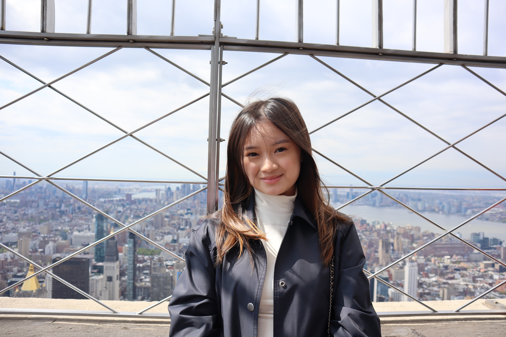
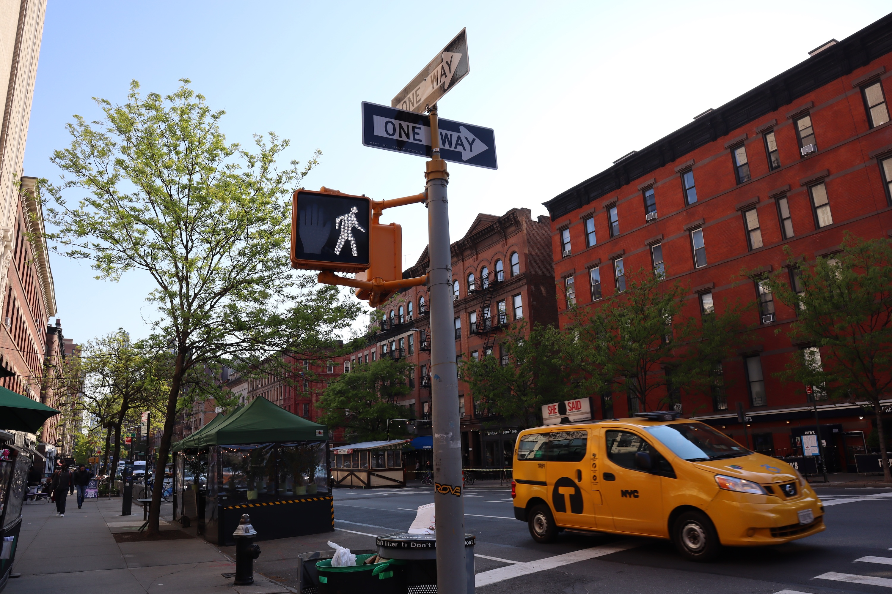

Jasmine Eats New York !
Introduction

I'm a sophomore at NYU, and if you know me, you know that food is probably my favorite topic of conversation. I grew up in Manila, Philippines, where food isn't just something you eat, it's how people show love, celebrate, grieve, gather, and connect. Every family gathering had a table overflowing with dishes, and I think that's where my obsession really started. Moving to New York felt like winning the lottery in terms of what's available to eat. This city has everything, and I've made it my personal mission to try as much of it as possible. Food has always meant more to me than just survival. It's culture, it's memory, it's identity. And in a city as diverse as New York, every meal is a chance to experience a little piece of somewhere else in the world. I hope this blog makes you hungry (and maybe inspires you to go explore too).
What is this site about?

Jasmine Eats New York is a personal food blog documenting my experiences dining across New York City's diverse and ever-changing restaurant scene. From hole-in-the-wall noodle shops in Flushing to trendy brunch spots in Brooklyn, I share honest ratings, personal opinions, and detailed thoughts on the food, atmosphere, and value of each place I visit. The website will be presented across three pages: a home page introducing who I am and what the blog is about, a Food Blogs page featuring a grid of individual restaurant reviews with photos and write-ups, and a Contact page where visitors can reach out with recommendations or collaboration inquiries. Each page will be visually consistent, using a clean layout with easy navigation so readers can explore reviews and discover their next favorite New York restaurant alongside me.